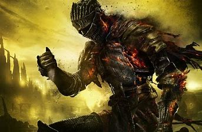

Bienvenue sur mon site web
PRESENTATION

Bonjour, je me nomme Romain Servant--Plagne. Je suis un étudiant en Première générale au lycée de Ferney-Voltaire.
J'adore :
- Jouer aux jeux vidéos. Je suis un très grand fan des jeux d'exploration, comme la série des Zelda,
et qui demandent une certaine dédication de la part du joueur pour surmonter leurs challenges
comme la série des Dark Souls, Hollow knight, etc...
- Jouer aux jeux de société/jeux de plateau/de cartes, comme Magic ou Dungeons et Dragons, parce que c'est toujours
fun de se faire une soirée délirante à propos d'orcs astronautes de temps à autre.
- Lire et dessiner, car lire entretient mon imagination et me fait rêver, et dessiner me permet de donner
vie à ces rêves, en quelque sorte.
- Créer des jeux et faire du game design. Quelque soit la catégorie de jeux, numériques ou non, que j'étudie,
comprendre le fonctionnement de ces choses qui nous font rire un jour, casser notre téléviseur un autre, m'a toujours
fasciné. Je souhaite devenir game designer plus tard afin d'un jour pouvoir me dire qu'une personne que
je ne connais pas, à l'autre bout du monde peut-être, aura tenu mon oeuvre entre ses mains.
ETUDES
Je suis quelqu'un qui est attiré par beaucoup de choses, aussi, je ne pense pas avoir de préférences pour les
mathématiques et les sciences plutôt que pour les langues et les arts littéraires. Je prévois de me rendre à Angoulême
pour poursuivre des études de game design et de cinéma là-bas... si je fais des études, ce que je ne garantis pas.
DEVOIR MAISON
Voici un lien conduisant à mes codes et recherches concernant ce phénomène mathématique. Bonne lecture et analyse!
Vers l'explication du Triangle de Sierpinski